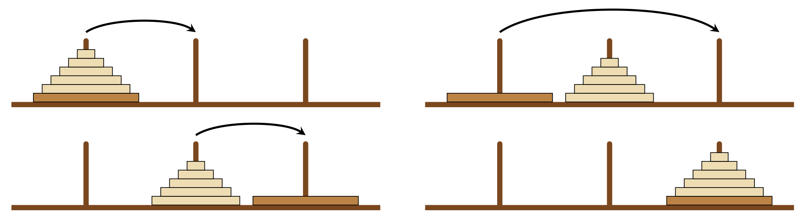

Le problème mathématique des tours de Hanoï a été inventé par Édouard Lucas. Paru d’abord en fascicule en 1889 , il est publié ensuite dans le tome 3 de ses « Récréations mathématiques », parues à titre posthume en 1892. Il annonce que ce problème est dû à un de ses amis, N. Claus de Siam (anagramme de Lucas d’Amiens, Amiens étant sa ville de naissance), prétendument professeur au collège de Li-Sou-Stian (anagramme de Saint Louis, le lycée où Lucas enseignait).
Sous le titre « Les brahmes tombent », Lucas relate que « N. Claus de Siam a vu, dans ses voyages pour la publication des écrits de l’illustre Fer-Fer-Tam-Tam, dans le grand temple de Bénarès, au-dessous du dôme qui marque le centre du monde, trois aiguilles de diamant, plantées dans une dalle d’airain, hautes d’une coudée et grosses comme le corps d’une abeille. Sur une de ces aiguilles, Dieu enfila au commencement des siècles, 64 disques d’or pur, le plus large reposant sur l’airain, et les autres, de plus en plus étroits, superposés jusqu’au sommet. C’est la tour sacrée du Brahmâ. Nuit et jour, les prêtres se succèdent sur les marches de l’autel, occupés à transporter la tour de la première aiguille sur la troisième, sans s’écarter des règles fixes que nous venons d’indiquer, et qui ont été imposées par Brahma. Quand tout sera fini, la tour et les brahmes tomberont, et ce sera la fin des mondes ! ».
Au début du jeu, les disques sont tous positionnés sur la première tige (du plus grand au plus petit) et l’objectif est de déplacer tous ces disques sur la troisième tige, en respectant les règles suivantes :
- Un seul disque peut être déplacé à la fois ;
- On ne peut jamais poser un disque sur un disque de diamètre inférieur.
-
Numéroter chaque disque pour un empilement à 4 disques et écrire l’enchaînement des étapes nécessaires à la réalisation de la tâche.
-
Faire émerger le raisonnement récursif qui permet de résoudre le problème.
Réponse
Pour pouvoir déplacer le dernier disque (celui du dessous), il est nécessaire de déplacer les $n − 1$ disques qui le couvrent sur la tige centrale. Une fois ces déplacements effectués, on peut le déplacer sur la troisième tige. Il reste alors à déplacer les $n − 1$ autres disques vers la troisième tige.
- Écrire le code de la fonction dont la spécification est
|
|
Tester cette fonction.
Aide
L’algorithme est le suivant :
- Si le nombre de disques est égal à 0, ne rien faire ;
- Si le nombre de disques est égal à 1, déplacer directement le disque du piquet $A$ au piquet $C$ ;
- Si le nombre de disques est supérieur ou égal à 2, enchaîner les étapes suivante :
- Déplacer $n-1$ disques du piquet $A$ jusqu’au piquet $B$ ;
- Déplacer le disque qui reste du piquet $A$ au piquet $C$ ;
- Déplacer $n-1$ disques du piquet $B$ au piquet $C$.
- Indiquer tous les appels de fonctions et toutes les instructions exécutées pour $n=3$.
Réponse
hanoi(3, "A", "B", "C")hanoi(2, "A", "C", "B")hanoi(1, "A", "B", "C")hanoi(0, "A", "C", "B")- Affichage : 1 de A à C
hanoi(0, "B", "A", "C")
- Affichage : 2 de A à B
hanoi(1, "C", "A", "B")hanoi(0, "C", "B", "A")- Affichage : 1 de C à B
hanoi(0, "A", "C", "B")
- Affichage : 3 de A à C
hanoi(2, "B", "A", "C")hanoi(1, "B", "C", "A")hanoi(0, "B", "A", "C")- Affichage : 1 de B à A
hanoi(0, "C", "B", "A")
- Affichage : 2 de B à C
hanoi(1, "A", "B", "C")hanoi(0, "A", "C", "B")- Affichage : 1 de A vers C
hanoi(0, "B", "A", "C")
- Quelle est la complexité de la fonction ?
Réponse
Récurrence
Si on note $x_n$ le nombre de mouvement pour déplacer $n$ disques, on obtient la relation de récurrence :
$$
\begin{aligned}
x_0 &= 0\cr
x_n &= 2 x_{n-1} + 1 \text{ si } n \ge 1\cr
\end{aligned}
$$
ce qui donne $$ x_n = 2^n - 1 $$
La complexité est en $O(2^n)$.